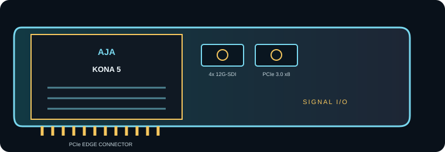

[ INDIVIDUAL COMPONENT // EXPANSION CARDS ]
AJA KONA 5
8K/4K PCIe video and audio I/O card with multi-link 12G-SDI. This is a model-specific reference; verify the board revision and full specifications against the official sources before installation.

IDENTIFICATION: Match the silkscreen/model marking, part number, board revision and bracket to manufacturer documentation. Port direction, supported formats and driver behavior can vary by model revision and software release.
Capture, playback and compatibility specifications
| Exact model | KONA 5 |
|---|---|
| Bus / host interface | PCI Express 3.0 x8; install in a mechanically/electrically suitable x8 or x16 slot with eight lanes available for full-bandwidth operation. |
| Capture / playback interface | Four bidirectional 12G-SDI BNC connections for capture and playback; links can be grouped for high-raster workflows. |
| Resolution and frame-rate envelope | SD, HD, 2K, 4K/UltraHD and 8K workflows; 8K and high-frame-rate operation depend on link mapping, raster, frame rate and the selected host application. |
| Pixel format and codec handling | The card moves video frames over SDI; AJA does not specify an onboard file codec. Capture/playback applications can handle uncompressed 10-bit 4:2:2 and supported higher-bit-depth workflows; ProRes/DNx or other file encoding is application/host-side. |
| Host compatibility | AJA Desktop Software and application/SDK support are required; supported Windows, macOS and Linux versions vary by software release. Confirm the current release notes and required PCIe bandwidth before deployment. |
| Limitations and installation checks | The connectors are multi-rate SDI, not HDMI. 8K modes consume multiple links and substantial host/memory bandwidth; cable mapping, reference, firmware and application support must all match. It does not replace a standalone recorder or encode files by itself. |
Integration notes and limitations
- Measure available PCIe lanes and sustained host/storage bandwidth; mechanical slot length alone does not guarantee the electrical link width needed by the card.
- Confirm that source timing, signal standard, cable, reference, pixel format, channel mapping and software configuration agree before recording or playback.
- Record driver/firmware versions, operating system, application, breakout/accessory part numbers and tested mode. Update only with a recovery plan for mission-critical rigs.
- The connectors are multi-rate SDI, not HDMI. 8K modes consume multiple links and substantial host/memory bandwidth; cable mapping, reference, firmware and application support must all match. It does not replace a standalone recorder or encode files by itself.
For codec planning, distinguish a video transport/interface and raw pixel format from a compressed media-file codec. A supported capture application may encode a file format that the card itself does not encode.
Manufacturer sources and support
- AJA — KONA 5 manufacturer technical/product informationProduct-line technical reference; consult the exact model format and interface table for the required mode.
- AJA — AJA KONA 5 support and downloadsOfficial support, driver or release-note resource; operating-system and software compatibility can change by release.
Manufacturer documentation for the precise hardware revision takes precedence over generic workflow or family-level guidance.